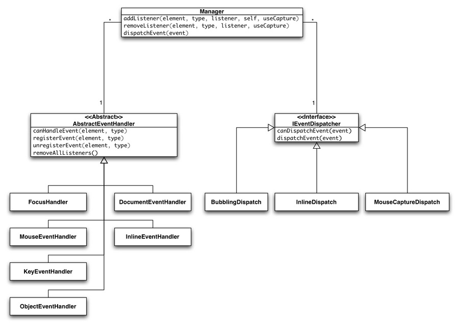

The Event Layer¶
The class qx.event.Manager provides a per-document wrapper for cross-browser DOM event handling. The implementation of the event layer is inside the qx.event namespace.
The following features work in all supported browsers:
- Canceling events: stopPropagation()
- Skipping the browser's default behavior: preventDefault()
- Unified event objects matching the W3C DOM 2 event interface
- Cross-browser event bubbling and capturing phase, even in Internet Explorer
- Mouse event capturing
- Port of the unified qooxdoo 0.7 key event handler to the 1.2 low-level layer. For a full list of available key identifiers see the getKeyIdentifier() method documentation of the qx.event.type.KeySequence class.
- Unified mouse events
- Normalized double click event sequence mousedown -> mouseup -> click -> mousedown -> mouseup -> click -> doubleclick in Internet Explorer
- Normalized right click sequence mousedown -> mouseup -> contextmenu in Safari 3 and Opera.
- Always fire click events if the mouseup happens on a different target than the corresponding mousedown event. Natively only Internet Explorer behaves like that.
UML Class Diagram¶
